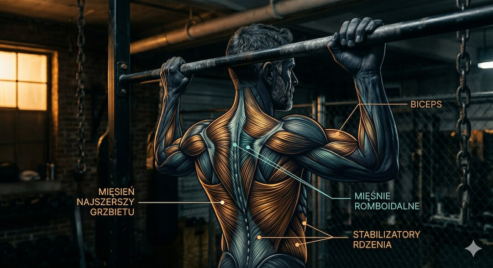
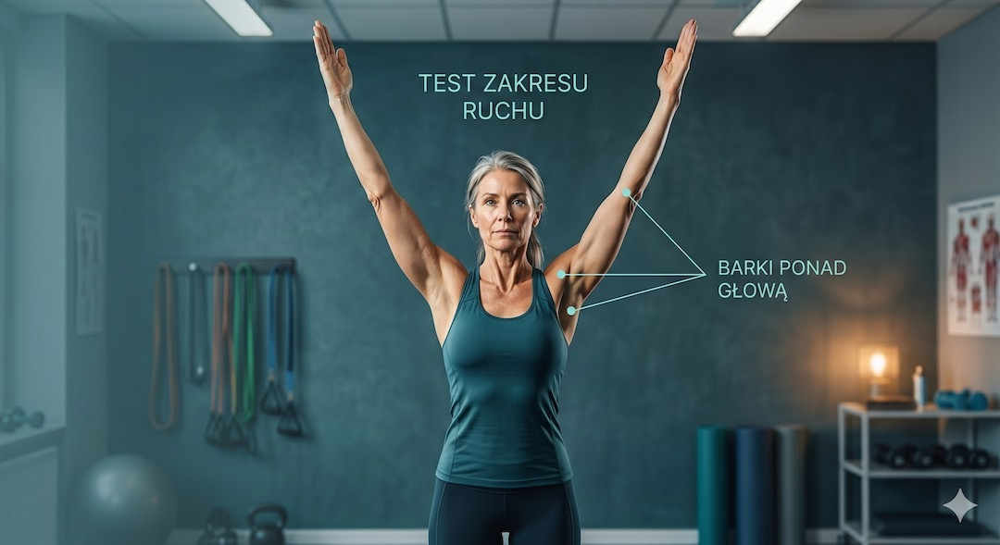
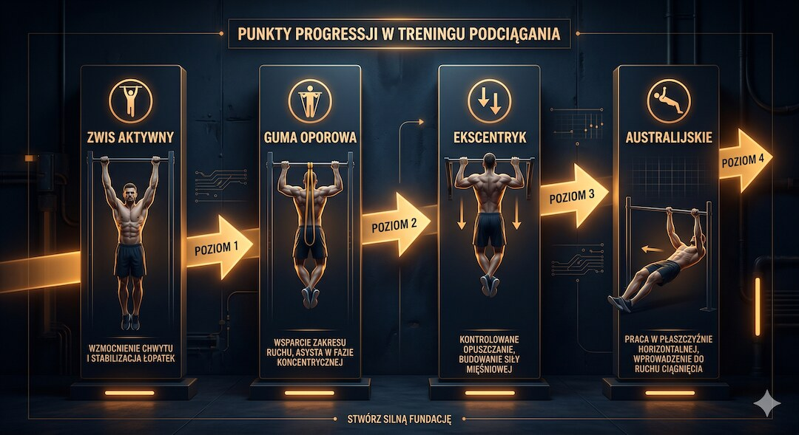

Szybka odpowiedź
Do pierwszego podciągnięcia nie trzeba zaczynać od pełnego zwisu ani obiecywać „50 powtórzeń”. Najpierw sprawdź bezbolesny zakres barku, chwyt i kontrolę łopatki. Buduj przyciąganie poziome, ściąganie wyciągu, zwis z częściowym odciążeniem i podciąganie z pomocą. Trenuj dwa lub trzy razy w tygodniu, zostawiając zapas i przerywając przy ostrym bólu barku lub łokcia.
Kluczowe wnioski
- Wiek nie wyklucza podciągania, ale historia barku i aktualna tolerancja zmieniają punkt startu.
- Guma pomaga najbardziej na dole, więc nie odzwierciedla równomiernie siły potrzebnej w całym ruchu.
- Kipping nie jest skrótem do pierwszego kontrolowanego powtórzenia i zwiększa dynamikę obciążenia.
- Celem pierwszego bloku jest technika oraz siła przyciągania, nie arbitralna liczba 50 powtórzeń.
Jak sprawdzić gotowość barków i chwytu?
Unieś ręce bez bólu i wyraźnego kompensowania tułowiem. Następnie chwyć niski drążek lub uchwyty z nogami na podłożu i sprawdź, czy potrafisz utrzymać łopatki pod kontrolą. Pełny bierny zwis nie jest obowiązkowym testem, szczególnie po urazie barku. Ostry ból, drętwienie lub utrata siły kończą próbę.
Przy ograniczeniu zakresu zacznij od pracy nad mobilnością i konsultacji, jeśli objaw jest trwały.

Od jakich ćwiczeń zacząć?
Wybierz przyciąganie poziome z regulacją kąta, ściąganie wyciągu do klatki i stabilne noszenie ciężaru dla chwytu. Wykonuj serie, po których zostałyby dwa lub trzy poprawne powtórzenia. Gdy potrafisz kontrolować łopatki i łokcie bez bólu, dodaj krótkie zwisy z podparciem stóp oraz powolne opuszczanie.
Maszyny są pełnoprawnym etapem nauki; ich dobór opisuje poradnik treningu maszynowego.

Jak przejść do podciągania wspomaganego?
Użyj maszyny, stóp na podwyższeniu lub gumy o takiej pomocy, aby każda faza była kontrolowana. Zapisuj rodzaj pomocy, chwyt i liczbę powtórzeń. Zmniejszaj pomoc dopiero po wykonaniu wszystkich serii bez skracania zakresu i bez pogorszenia objawów następnego dnia. Nie zmieniaj jednocześnie chwytu, objętości i pomocy.
Ogólną progresję siły znajdziesz w Centrum Treningu Siłowego.

Kiedy ból barku lub łokcia wymaga przerwy?
Przerwij przy ostrym bólu, nagłej utracie siły, urazie, wyraźnym nocnym bólu albo drętwieniu promieniującym do ręki. Powtarzalna tkliwość łokcia po każdej sesji sugeruje zbyt dużą dawkę lub chwyt, który trzeba zmienić. Nie lecz objawów dokładaniem negatywów i nie testuj pełnego ruchu codziennie.
Bezpieczny start całego ciała opisuje plan pierwszych tygodni na siłowni.
| Etap | Ćwiczenie | Kryterium przejścia |
|---|---|---|
| Baza | Przyciąganie poziome | Pełne serie z zapasem |
| Pion | Wyciąg do klatki | Kontrola łopatek i łokci |
| Zwisy | Odciążenie stopami | Bez bólu i utraty chwytu |
| Specyfika | Podciąganie wspomagane | Stopniowo mniejsza pomoc |
Pierwsze podciągnięcie powstaje z miesięcy kontrolowanego przyciągania, a nie z codziennego sprawdzania, czy już się uda.
Najczęściej zadawane pytania
Czy można zacząć podciąganie po 50-tce?
Tak, jeśli dobierzesz wariant do siły, zakresu barków i historii urazów oraz progresujesz stopniowo.
Czy guma pomaga w pierwszym podciągnięciu?
Tak, ale pomoc jest nierówna i największa na dole. Zapisuj opór gumy i łącz ją z innymi wariantami.
Ile razy w tygodniu ćwiczyć?
Najczęściej wystarczą dwie lub trzy sesje z przerwą, zależnie od objętości i reakcji barków oraz łokci.
Czy zwis jest dobry na barki?
Nie dla każdego. Może budować chwyt i tolerancję, ale po urazie lub przy bólu potrzebny jest wariant odciążony albo inna metoda.
Plan startowy, ćwiczenia, progresję i zasady bezpieczeństwa znajdziesz w Centrum Treningu Siłowego po 50-tce.
Źródła
- NSCA resistance training for older adults
- Pull-up exercise variations and muscle activity
- Shoulder position during pull-up variants
- Resistance training progression models
Uwaga: Artykuł ma charakter informacyjny i edukacyjny. Nie zastępuje konsultacji, diagnozy ani indywidualnego leczenia.